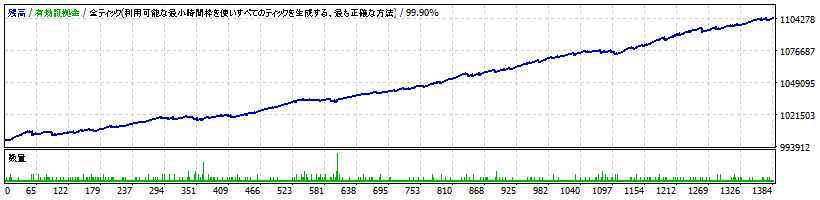

PrismaFX Lab
USD/JPY 自動売買EA
PrismaFX UJ M15
10年バックテストで磨いた、低ドローダウン設計。
勝率
73.52%
プロフィットファクター
1.73
最大ドローダウン
0.55%
2016〜2026・全1,382取引・モデリング品質99.90%（バックテスト）
バックテスト実績（過去検証）

通貨ペア / 時間足
USDJPY / 15分足
検証期間
2016.01〜2026.06（約10年）
総取引数
1,382
勝率
73.52%
プロフィットファクター
1.73
最大ドローダウン
0.55%
純益（初期100万・0.01ロット）
+104,560円
モデリング品質
99.90%（全ティック）
複利（資金管理）モードも搭載。リターンは伸びますが最大ドローダウンも大きくなるため上級者向けです。
特徴
USD/JPY M15特化
：複数フィルターでエントリーを厳選するロジック
感情を排除
：損切り・利確を自動執行、機械的に運用
10年・1,382取引
で長期検証、局面の偏りを確認
低ドローダウン設計
（最大DD0.55%）で資金管理しやすい
価格
PrismaFX UJ M15（USD/JPY）買い切り
¥17,800
（税込）
サポート・設定
導入・設定の手順は、ご購入者向けの同梱マニュアルでご案内します。